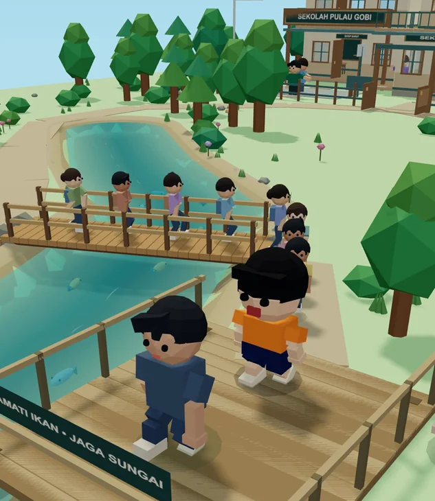
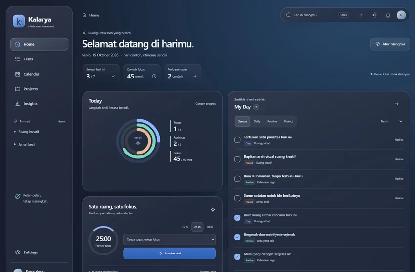
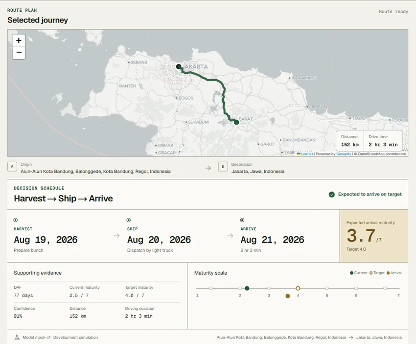
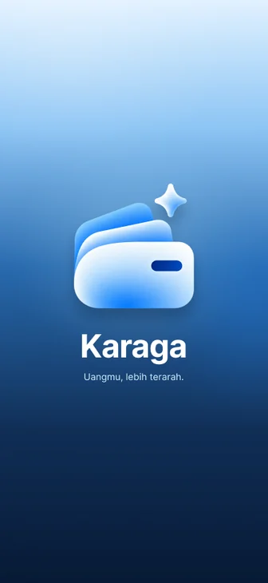
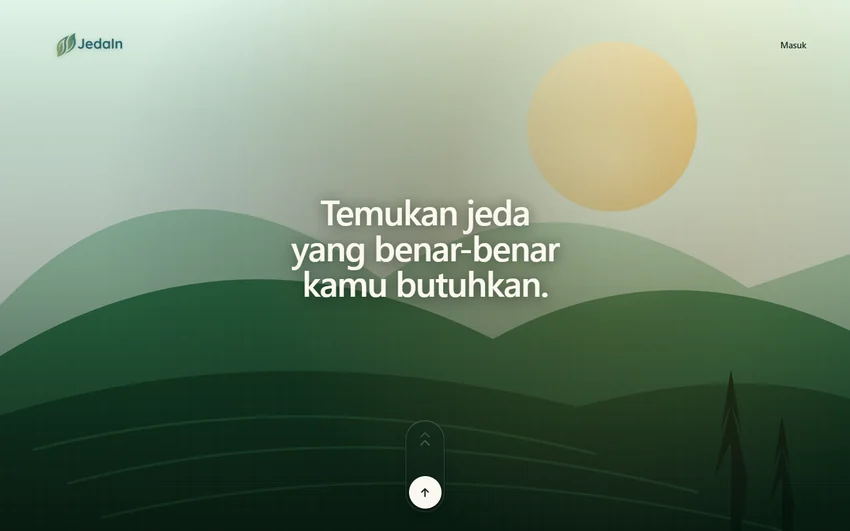

Pulau Gobi
Serial 3D low-poly. Pulaunya ikut berubah setiap ada episode baru.
HALAMAN PERSONAL DEWO
dari Malang, ditulis pakai HTML

Di Meja Tulis
Audio gagal diputar. Buka MP3
Nama lengkapku Dewo Adjie Fadhillah, tapi di internet aku biasa pakai VLUU. Aku tinggal di Malang dan biasa bikin aplikasi web. Kalau lagi pindah tab, bisa jadi aku lagi di Figma, nyoba ESP32, atau ngurus Pulau Gobi.
Kalau mau lihat kodeku, mampir ke GitHub. Aku juga ada di Instagram.
– Dewo

Serial 3D low-poly. Pulaunya ikut berubah setiap ada episode baru.

Aplikasi web buat nyatet tugas, mengatur proyek, dan kerja bareng.

AI untuk menilai kematangan pisang Cavendish dan merencanakan panen.

Desain dashboard anggaran dan splash screen untuk pencatatan keuangan.

Proyek wisata wellness. Juara Harapan 1 di HOLOGY 9.0.
Kunci ESP32 yang tetap bisa dibuka pakai kunci fisik.
Entri tersimpan di browser ini.